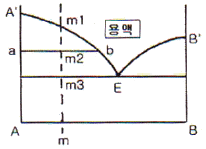
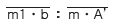
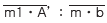
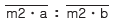
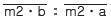

자기비파괴검사기능사 (2012-02-12 기출문제)
1과목: 자기탐상시험법
1. 자분탐상시험에 사용되는 자분이 가져야 할 성질로 옳은 것은?
- 높은 투자율를 가져야 한다.
- 높은 보자력를 가져야 한다.
- 높은 잔류자기를 가져야 한다.
- 자분의 입도와 결함 크기와는 상관이 없다.
(정답률: 61%)

2. ASME Sec.XI에 따라 원자로용기의 사용전 쉘, 헤드, 노즐 용접부의 100% 체적 검사 방법은?
- 초음파탐상검사(UT)
- 방사선투과검사(RT)
- 자분탐상검사(MT)
- 육안검사(VT)
(정답률: 54%)
3. 예상되는 결함이 표면의 개구부와 표면직하의 비개구 부인 비철재료에 대한 비파괴검사에 가장 적합한 방법은?
- 자기탐상검사
- 초음파탐상검사
- 전자유도시험
- 침투탐상검사
(정답률: 36%)
4. 비파괴검사 시스템에서 거짓지시란 무엇인가?
- 비파괴검사 시스템에 의해 결함이 반복되어 나타나는 것
- 비파괴검사 시스템에 의해 실제로는 결함이 없는 부위를 결함으로 판단하는 것
- 비파괴검사 시스템에 의해 실제로 결함이 있는 부위를 무결함이라 나타내는 것
- 비파괴검사 시스템의 장치적 문제로 나타나는 지시의 모양
(정답률: 77%)
5. 침투탐상검사방법 중 FB-W의 시험순서로 맞는 것은?
- 전처리 → 침투처리 → 유화처리 → 세척처리 → 현상처리 →건조처리 → 관찰 → 후처리
- 전처리 → 침투처리 → 세척처리 → 건조처리 → 현상처리 → 관찰 → 후처리
- 전처리 → 침투처리 → 유화처리 → 세척처리 → 건조처리 → 현상처리 → 관찰 → 후처리
- 전처리 → 침투처리 → 유화처리 → 세척처리 → 건조처리 → 관찰 → 후처리
(정답률: 69%)
6. 와전류탐상검사를 수행할 때 시험 부위의 두께 변화로 인한 전도도의 영향을 감소시키기 위한 방법으로 가장 적합한 것은?
- 전압을 감소시킨다.
- 시험주파수를 감소시킨다.
- 시험속도를 증가시킨다.
- fill factor(필 펙터)를 감소시킨다.
(정답률: 58%)
7. 방사성동위원소의 붕괴 형태가 아닌 것은?
- α입자의 방출
- β입자의 방출
- 전자포획
- 중성자 방출
(정답률: 45%)
8. 침투탐상검사에서 시험체를 가열한 후, 결함 속에 있는 공기나 침투제의 가열에 의한 팽창을 이용해서 지시모양을 만드는 현상법은?
- 건식현상법
- 속건식현상법
- 특수현상법
- 무현상법
(정답률: 65%)
9. 코일 법으로 자분탐상시험을 할 때 요구되는 전류는 몇 A 인가?(단, L/D은 3, 코일의 감은 수는 10회, 여기서 L 은 봉의 길이며 D 는 봉의 외경이다.)
- 30
- 700
- 1167
- 1500
(정답률: 66%)
10. 두꺼운 금속제의 용기나 구조물의 내부에 존재하는 가벼운 수소화합물의 검출에 가장 적합한 검사 방법은?
- X-선투과검사
- 감마선투과검사
- 중성자투과검사
- 초음파탐상검사
(정답률: 68%)
11. 초음파탐상검사에서 보통 10mm 이상의 초음파빔 폭보다 큰 결함크기 측정에 적합한 기법은?
- DGS선도법
- 6dB 드롭법
- 20dB 드롭법
- TOF법
(정답률: 64%)
12. 결함부와 건전부의 온도정보의 분포패턴을 열화상으로 표시하여 결함을 탐지하는 비파괴검사법은?
- 중성자투과검사(NRT)
- 적외선검사(TT)
- 음향방출검사(AET)
- 와전류탐상검사(ECT)
(정답률: 86%)
13. 누설시험에서 압력 단위로 atm이 사용되는데 다음중 1atm과 동일한 압력이 아닌 것은?
- 101.3kPa
- 760mmHg
- 760torr
- 147psi
(정답률: 61%)
14. 침투탐상시험에서 접촉각과 적심성 사이의 관계를 옳게 설명한 것은?
- 접촉각이 클수록 적심성이 좋다.
- 접촉각이 작을수록 적심성이 좋다.
- 접촉각이 적심성과는 관련이 없다.
- 접촉각이 90° 일 경우 적심성이 가장 좋다.
(정답률: 64%)
15. 자분탐상시험시 표면불연속부의 탐상에 가장 효과적인 전류는?
- 직류
- 교류
- 반파직류
- 전파직류
(정답률: 62%)
16. 원형자화에서는 자화력의 세기가 [암페어]단위로 표시된다. 선형자화에서는 어떻게 표시하고 있는가?
- 암페어
- 암페어-권선수
- 쿨롱
- 전압
(정답률: 79%)
17. 다음 중 결함의 검출이 어려울 것으로 예상되는 것은?
- 봉강을 축통전법으로 검사하여 길이 방향의 결함을 검출하고자 할 때
- 프로드법으로 압연품의 적층(Lamination)을 검출하고자 할 때
- 극간법(요크법)으로 극간에 대해 직각으로 존재하는 결함을 검출하고자 할 때
- 베어링 하우징의 내면 결함을 중심도체법으로 검사할 때
(정답률: 55%)
18. 자계의 방향과 수직으로 놓여 있는 길이 1m 의 도선에 1A의 전류가 흘러서 도선이 받는 힘이 1N 이 될 때의 자계의 세기를 옳게 나타낸 것은?
- 1Weber(Wb)
- 1Henry(H)
- 1Coulomb(C)
- 1Tesla(T)
(정답률: 51%)
19. 형광자분을 사용하는 자분탐상시험시 광원으로부터 몇 cm 떨어진 시험체 표면에서 자외선등의 강도는 최소 800 μW/cm2 이상이어야 하는가?
- 15
- 38
- 50
- 72
(정답률: 80%)
20. 다음 중 자기이력곡선(Hysteresis curve)과 가장 관계가 깊은 것은?
- 자력의 힘과 투자율
- 자장의 강도와 자속밀도
- 자장의 강도와 투자율
- 자력의 힘과 자력의 강도
(정답률: 67%)
2과목: 자기탐상관련규격
21. 자분탐상시험에서 원형자화를 시키기 위한 방법의 설명으로 옳은 것은?
- 부품의 횡단면으로 코일을 감는다.
- 부품의 길이 방향으로 전류를 흐르게 한다.
- 요크(yoke)의 끝을 부품길이 방향으로 놓는다.
- 부품을 전류가 흐르고 있는 코일 가운데 놓는다.
(정답률: 70%)
22. 영구자석을 사용하는 극간법은 다음 중 어떤 시험에 가장 효과적인가?
- 용접부 내부 균열시험
- 대형 구조물의 국부시험
- 대형 주조품 시험
- 소형 단조품 시험
(정답률: 61%)
23. 다음 중 자분탐상시험과 관련된 기기가 아닌 것은?
- 자장계
- 침전계
- 계조계
- 자외선등
(정답률: 64%)
24. KS 규격의 자분탐상시험에 사용하는 A형 표준시험편에 대한 설명으로 옳지 않은 것은?
- 연속법과 잔류법을 사용한다.
- 시험편의 인공흠에는 직선형과 원형이 있다.
- 시험편에 나타나는 자분모양은 주로 시험체 표면의 자계의 강도에 좌우된다.
- 시험편 명칭 중 사선의 오른 쪽은 판두께를 나타낸다.
(정답률: 53%)
25. 사용 중 불연속으로서 보통 응력이 집중되는 부위 혹은 주변에 나타나는 결함은?
- 피로 균열
- 연마 균열
- 비금속 개재물
- 단조 균열
(정답률: 76%)
26. 다음 중 자분탐상시험에서 의사지시(의사모양)가 나타나는 가장 큰 원인의 조합으로 옳은 것은?
- 과도한 전류와 시험체 두께가 일정
- 능숙한 검사조작과 장비의 성능저하
- 부적절한 점사조작과 자계의 불균일한 분포
- 시험체의 자기적 안정과 검사액(자분)의 오염
(정답률: 72%)
27. 자분탐상시험에서 자분에 대한 설명 중 잘못된 것은?
- 자분은 형광 자분과 비형광 자분이 있다.
- 자분은 습식 자분과 건식 자분이 있다.
- 자분은 적당한 크기, 모양, 투자성 및 보자성을 가진 선택된 자성체이다.
- 자분 용액 제조 시 솔벤트나 케로신을 사용하고 물은 사용치 않는다.
(정답률: 73%)
28. 철강 재료의 자분탐상 시험방법 및 자분모양의 분류(KS D 0213)에 의해 A형 표준시험편의 자기특성에 이상이 생겼을 때 어떻게 해야 하는가?
- 사용을 중지한다.
- 자화전류를 높여주면 된다.
- 자분을 입도가 큰 것으로 사용한다.
- 요크법을 사용하면 된다.
(정답률: 73%)
29. 철강 재료의 자분탐상 시험방법 및 자분모양의 분류(KS D 0213)에 따른 시험장치의 감도조정을 할 때 고려할 사항과 거리가 먼 것은?
- 시험품의 모양과 치수
- 자극의 방향
- 홈의 성질
- 시험품의 표면상황
(정답률: 28%)
30. 철강 재료의 자분탐상 시험방법 및 자분모양의 분류(KS D 0213)에서 자분모양의 관찰에 대한 사항을 설명한 것 중 옳지 않은 것은?
- 형광자분을 사용한 경우에는 충분히 어두운 곳(관찰면 밝기 20 lx 이하)에서 관찰해야 한다.
- 비형광자분을 사용한 경우에는 충분히 밝은 조명(관찰면 밝기 500lx 이상) 아래에서 관찰해야 한다.
- 자분의 관찰은 원칙적으로 확실한 지시가 나타나도록 자분모양이 형성된 후 충분히 기다려 관찰해야 한다.
- 자분모양에서 흠의 깊이를 추정하는 것은 옳지 않다.
(정답률: 57%)
31. 압력 용기-비파괴 시험 일반(KS B 6752)에서 요크의 인상력에 대한 사항 중 틀린 것은?
- 교류 요크는 최대극간거리에서 최대한 4.5kg의 인상력을 가져야 한다.
- 영구자석 요크는 최대극간거리에서 최소한 18kg의 인상력을 가져야 한다.
- 영구자석 요크의 인상력은 사용전 매일 점검하여야 한다.
- 모든 요크는 수리할 때마다 인상력을 점검하여야 한다.
(정답률: 65%)
32. 철강 재료의 자분탐상 시험방법 및 자분모양의 분류(KS D 0213)에 따라 A형 표준시험편을 선택할 때 고려하지 않아도 되는 사항은?
- 시험체의 자기특성
- 검출해야 할 흠의 종류
- 검출해야 할 흠의 크기
- 검사액의 농도
(정답률: 48%)
33. 용기-비파괴 시험 일반(KS B 6752)에 따라 형광자분을 사용한 자분 탐상 시험에서 자외선등의 강도 측정에 관한 설명으로 틀린 것은?
- 시험 표면에서 요구되는 자외선 강도는 최소 1000μW/cm2이다.
- 자외선등의 강도는 최소한 매 10시간에 한 번
- 작업 장소가 바뀌는 경우 자외선등의 강도를 측정하여야 한다.
- 자외선등의 전구를 교환할 때 자외선등의 강도를 측정하여야 한다.
(정답률: 48%)
34. 압력 용기-비파괴 시험 일반(KS B 6752)의 자분탐상시험시 이물질 등이 제거되어야 할 시험부위로부터의 최소범위는?
- 5mm
- 10mm
- 15mm
- 25mm
(정답률: 69%)
35. 코일자화법에서 암페어 턴이 3000이고, 3회 감긴 코일을 사용한다면 자회전류는?
- 1000A
- 3000A
- 6000A
- 9000A
(정답률: 47%)
36. 철강 재료의 자분탐상 시험방법 및 자분모양의 분류(KS D 0213)에서 용접부의 열처리 후 또는 압력용기의 내압시험 종류 후에 하는 시험의 자화방법은 원칙적으로 어는 방법으로 하도록 규정하고 있는가?
- 극간법
- 프로드법
- 직각통전법
- 자속관통법
(정답률: 60%)
37. 철강 재료의 자분탐상 시험방법 및 자분모양의 분류(KS D 0213)에서 정류식 장치라 함은?
- 주기적으로 크기가 변화하는 자화전류장치
- 시험품에 자속을 발생시키는데 사용하는 전류장치
- 사이클로트론, 사일리스터 등을 사용하여 얻을 1펄스의 자화전류장치
- 교류를 직류 또는 맥류로 바꾸어 자화전류를 공급하게 하는 자화장치
(정답률: 75%)
38. 철강 재료의 자분탐상 시험방법 및 자분모양의 분류(KS D 0213)에서 자화방법의 부호로 “C”가 의미하는 것은?
- 전류관통법
- 프로드법
- 극간법
- 코일법
(정답률: 78%)
39. 철강 재료의 자분탐상 시험방법 및 자분모양의 분류(KS D 0213)에 따라 시험기록을 작성할 때 기입되는 내용으로 잘못 설명된 것은?
- 시험체는 품명, 치수, 열처리상태 및 표면상태를 기재한다.
- 자분의 모양은 제조자명, 형번, 입도, 형광⋅비형광의 구별 및 색을 기재한다.
- 시험결과는 결함의 등급, 자분모양과 그 분류 등을 구분하여 기재한다.
- 자회전류가 맥류인 경우 맥류⋅단상반파정류 방식 등을 부기한다.
(정답률: 38%)
40. 철강 재료의 자분탐상 시험방법 및 자분모양의 분류(KS D 0213)에서 정의한 표피효과란?
- 시험품에 가한 직류전류나 직류자속이 자분을 표면에 모이게 하는 현상
- 시험품에 가한 교류전류나 교류자속이 표면 가까운 부분에 모이는 현상
- 교류전류나 교류자속이 시험품의 표면에서 내부로 침투하려는 현상
- 직류전류나 직류자속이 시험품의 표면 가까운 부분에서 자분을 모으는 현상
(정답률: 49%)
3과목: 금속재료일반 및 용접일반
41. 철강 재료의 자분탐상 시험방법 및 자분모양의 분류(KS D 0213)에서 시험결과를 기록하는 내용에 포함되지 않는 사항은?
- 자분모양의 유무
- 자분모양의 위치
- 자분모양의 분류
- 자분모양의 등급
(정답률: 54%)
42. 항공우주용 자기탐상 검사방법(KS W 4041)에서 비형광 자분법을 사용시 백색등(또는 가시광)을 검사 영역에 설치하여야 한다. 적절한 검사를 수행하기 위해서는 적어도 몇 룩스 이하의 백색등이 필요한가?
- 500룩스
- 1000룩스
- 1250룩스
- 2150룩스
(정답률: 67%)
43. 다음 중 황동 합금에 해당되는 것은?
- 질화강
- 톰백
- 스텔라이트
- 화이트 메탈
(정답률: 65%)
44. 다음 중 슬립(slip)에 대한 설명으로 틀린 것은?
- 원자 밀도가 가장 큰 격자면에서 잘 일어난다.
- 원자 밀도가 최대인 방향으로 잘 일어난다.
- 슬립이 계속 진행하면 결정은 점점 단단해져서 변형이 쉬워진다.
- 다결정에서는 외력이 가해질 때 슬립방향이 서로 달라 간섭을 일으킨다.
(정답률: 69%)
45. 공구용 재료로서 구비해야 할 조건이 아닌 것은?
- 강인성이 커야 한다.
- 내마멸성이 작아야 한다.
- 열처리와 공작이 용이해야 한다.
- 상온과 고온에서의 경도가 높아야 한다.
(정답률: 70%)
46. Y합금의 일종으로 Ti 과 Cu를 0.2% 정도씩 첨가한 합금으로 피스톤에 사용되는 합금의 명칭은?
- 라우탈
- 엘린바
- 두랄루민
- 코비탈륨
(정답률: 56%)
47. 다음 중 Mg 합금에 해당하는 것은?
- 실루민
- 문쯔메탈
- 엘렉트론
- 배빗메탈
(정답률: 41%)
48. 다음 중 두랄루민과 관련이 없는 것은?(오류 신고가 접수된 문제입니다. 반드시 정답과 해설을 확인하시기 바랍니다.)
- 용체화처리를 한다.
- 상온시효처리를 한다.
- 알루미늄 합금이다.
- 단조경화 합금이다.
(정답률: 38%)
49. 주물용 Al-Si 합금 용탕에 0.01% 정도의 금속나트륨을 넣고 주형에 용탕을 주입함으로써 조직을 미세화시키고 공정점을 이동시키는 처리는?
- 용체화처리
- 개량처리
- 접종처리
- 구상화처리
(정답률: 55%)
50. 독성이 없어 의약품, 식품 등의 포장형 튜브 제조에 많이 사용되는 금속으로 탈색효과가 우수하며, 비중이 약 7.3인 금속은?
- 주석(Sn)
- 아연(Zn)
- 망간(Mn)
- 백금(Pt)
(정답률: 54%)
51. 금속 중에 0.01~0.1㎛ 정도의 산화물 등 미세한 입자를 균일하게 분포시킨 금속 복합 재료는 고온에서 재료의 어떤 성질을 향상시킨 것인가?
- 내식성
- 크리프
- 피로강도
- 전기전도도
(정답률: 61%)
52. 용탕을 금속 주형에 주입 후 응고할 때, 주형의 면에서 중심 방향으로 성장하는 나란하고 가느다란 기둥 모양의 결정을 무엇이라고 하는가?
- 단결정
- 다결정
- 주상 결정
- 크리스탈 결정
(정답률: 71%)
53. 다음 중 반도체제조용으로 사용되는 금속으로 옳은 것은?
- W, Co
- B, Mn
- Fe, P
- Si, Ge
(정답률: 50%)
54. 아공석강의 탄소 함유량(%C)으로 옳은 것은?
- 0.025~0.8%C
- 0.8~2.0%C
- 2.0~4.3%C
- 4.3~6.67%C
(정답률: 61%)
55. 강괴의 종류에 해당되지 않는 것은?
- 쾌삭강
- 캡드강
- 킬드강
- 림드강
(정답률: 58%)
56. 다음의 금속 상태도에서 합금 m을 냉각시킬 때 m2 점에서 결정 A와 용액 E 와의 양적 관계를 옳게 나타낸것은?

- 결정A : 용액E =

- 결정A : 용액E =

- 결정A : 용액E =

- 결정A : 용액E =

(정답률: 45%)
57. 구상흑연 주철품의 기호표시에 해당하는 것은?
- WMC 490
- BMC 340
- GCD 450
- PMC 490
(정답률: 55%)
58. 용접기의 사용율 계산시 아크 시간과 휴식 시간을 합한 전체시간은 몇 분을 기준으로 하는가?
- 10분
- 20분
- 40분
- 60분
(정답률: 46%)
59. 다음 중 가스 용접에서 사용되는 지연성 가스는?
- 아세틸렌(C2H2)
- 수소(H2)
- 메탄(CH4)
- 산소(O2)
(정답률: 46%)
60. 다음 중 용융속도와 용착속도가 빠르며 용입이 깊은 특징을 가지며, “잠호용접” 이라고도 불리는 용접의 종류는?
- 저항 용접
- 서브머지드 아크 용접
- 피복 금속 아크 용접
- 불활성 가스 텅스텐 아크
(정답률: 63%)
자분탐상시험은 매우 민감한 검사이기 때문에, 적은 양의 자분으로도 정확한 결과를 얻을 수 있어야 합니다. 따라서 자분은 높은 투자율을 가져야 하며, 이는 적은 양의 자분으로도 충분한 검사를 할 수 있도록 해줍니다. 또한, 높은 투자율은 자분의 정확도와 일관성을 보장해주기 때문에, 검사 결과의 신뢰도를 높여줍니다.